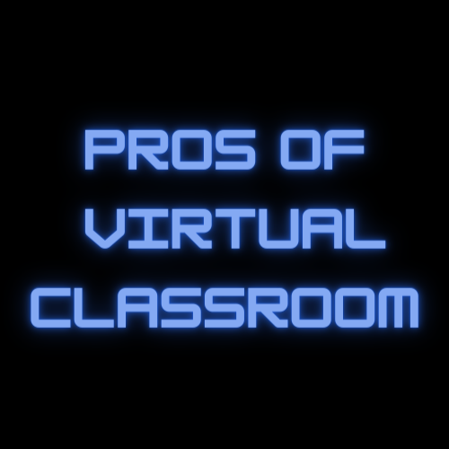
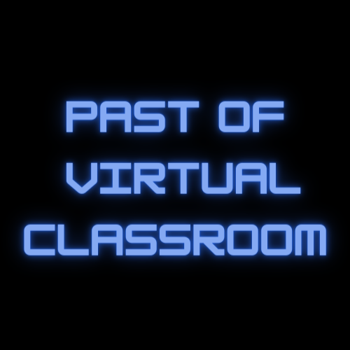

A virtual classroom is an online learning environment that enables remote education through the use of digital tools and technologies. It replicates the traditional classroom experience, allowing students and instructors to interact in real-time. Virtual classrooms often include live video lectures, discussions, collaborative activities, and access to educational resources. These platforms facilitate distance learning, making education more accessible to diverse learners worldwide. The virtual classroom enhances engagement, flexibility, and interactivity, fostering a dynamic and personalized learning experience beyond physical boundaries.
Virtual classrooms offer flexibility, allowing learners to access content remotely. They promote inclusivity by accommodating diverse schedules and locations. Interactive features enhance engagement, and recorded sessions enable self-paced learning. Cost-effective for institutions and convenient for students, virtual classrooms transcend geographical constraints, fostering a globalized educational landscape.
Virtual classrooms face challenges such as technical issues disrupting sessions. Limited face-to-face interaction may hinder social aspects of learning. Some learners may struggle with self-discipline, and the absence of physical presence can lead to feelings of isolation. Access barriers, like unreliable internet, may hinder participation, impacting the overall learning experience.
The evolution of virtual classrooms has been marked by rapid technological advancements. Initially relying on basic communication tools, they've transformed with the integration of advanced video conferencing, interactive features, and AI. Over time, user-friendly interfaces and improved connectivity have enhanced the overall effectiveness and accessibility of virtual classroom experiences.
In the future, virtual classrooms will advance with immersive technologies like augmented and virtual reality, creating lifelike learning environments. Artificial intelligence will personalize education, tailoring content to individual needs. Collaborative tools will evolve, fostering real-time, interactive group activities. Advanced analytics will offer deep insights into student progress, enabling adaptive teaching strategies. The integration of emerging technologies will not only enhance engagement but also redefine the future of education, making it more dynamic, inclusive, and responsive to diverse learning styles.